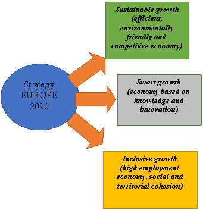

Paper Title :
Structural European Funds related to Romania in the period 2014-2020 and convergence to the European Union
Abstract
Through this article we aim to present the importance of structural and cohesion funds in Romania, for the financial period 2014-2020 and the convergence to the European Union of our country. The experience that our country has from 2007 to 2013, can further highlight the importance of effective coordination and a strategic vision in promoting and attracting financial capital from the European Union. European funds aim to develop certain areas and support Member States in order to be able to reach certain development standards, in order to eliminate as much as possible, the discrepancies between them. The Structural Funds are non-reimbursable, i.e. no interest is charged on their granting and the money received from the European Union (EU or the Union), through specific programs, must not be repaid. However, receiving these funds involves making certain investments that should lead to an increase in gross value added in the fields of application. The importance of public policies, which aim to streamline the activities carried out within government institutions, will have a particularly important role in ensuring the efficiency of the degree of absorption and implementation of structural funds. These will be quantified using performance indicators and results forecasted and assumed both centrally and locally. We will also highlight the main strategic objectives and investment priorities of Romania, in line with the European ones for a smart, sustainable and inclusive growth.
Author:
Vasile Ionel Popescu
The Bucharest University of Economic Studies
PhD Faculty of Marketing
Bucharest, Romania
Paper Transcript of Paper Titled :
Structural European Funds related to Romania in the period 2014-2020 and convergence to the European Union
Structural European Funds related to Romania in the period
2014-2020 and convergence to the European Union
Vasile Ionel Popescu
The Bucharest University of Economic Studies
PhD Faculty of Marketing
Bucharest, Romania
ionelpopescu@gmail.com
Abstract — Through this article we aim to present the importance of structural and cohesion funds in Romania, for the financial period 2014-2020 and the convergence to the European Union of our country. The experience that our country has from 2007 to 2013, can further highlight the importance of effective coordination and a strategic vision in promoting and attracting financial capital from the European Union. European funds aim to develop certain areas and support Member States in order to be able to reach certain development standards, in order to eliminate as much as possible, the discrepancies between them. The Structural Funds are non-reimbursable, i.e. no interest is charged on their granting and the money received from the European Union (EU or the Union), through specific programs, must not be repaid. However, receiving these funds involves making certain investments that should lead to an increase in gross value added in the fields of application. The importance of public policies, which aim to streamline the activities carried out within government institutions, will have a particularly important role in ensuring the efficiency of the degree of absorption and implementation of structural funds. These will be quantified using performance indicators and results forecasted and assumed both centrally and locally. We will also highlight the main strategic objectives and investment priorities of Romania, in line with the European ones for a smart, sustainable and inclusive growth.
Keywords-Economic: policies, competitiveness, sustainable development, cohesion.
Introduction
The Structural Funds contribute to a lasting balance at European Union level by strengthening competitiveness, developing disadvantaged areas, supporting people from disadvantaged groups, supporting young people, promoting initiatives, protecting the environment, reintegrating and converting, and investing in infrastructure.
For Romania, European funds will continue to be one of the most important tools to be used to reduce regional disparities, as well as promoting economic growth at regional and local level, strengthening competitiveness and increasing employment, benchmarks at European Union, [1], level.
It is recognized that the achievement of these objectives is possible by ensuring a favorable environment for investment, the establishment of new companies or the development of existing ones, contributing significantly to the creation of new jobs and the generation of added value [2], [3].
In this context, the use of structural support for the period 2014-2020 aims to create the conditions for constant improvement and development of the business environment, having as main objectives:
• stimulating the competitiveness of enterprises;
• facilitating access to finance;
• creating a favorable environment for creating new businesses and encouraging the entrepreneurial culture;
• supporting companies to operate externally and access new markets;
• ensuring a qualified and adaptable workforce.
Measures in this challenge will focus on the following thematic areas:
• research, technological development and innovation. The proposed interventions are aimed at supporting innovation in enterprises, as well as by building capacities for excellence in research and innovation and for technological change. In rural areas, innovation and the knowledge base will be strengthened through cooperation between the agricultural, food and forestry sectors and other actors, as well as through the creation of clusters and networks and the use of consultancy services.
• information and communication technology. Increasing the capacity of companies or entrepreneurs to have access to services, as well as increasing their use.
• the competitiveness of SMEs - Small and Medium-sized Enterprises, the agricultural sector and the fisheries and aquaculture sector. Efforts will be focused on supporting investment in entrepreneurship, commercial exploitation of new ideas and research results, by providing business advisory services, and supporting the development of online tools.
Interventions to improve the competitiveness of the agricultural sector will help ensure sustainable food production in the EU and contribute to job creation and preservation, as well as economic growth in rural areas.
For the period 2014–2020, member countries are required to develop and implement strategic plans for accessing ESI funds. The process has been simplified and streamlined by creating, at European level, a common strategic framework included in the partnership agreement and a unified definition of common standards for member countries' programs [7]. Romania is currently developing and implementing functional strategic planning and monitoring tools to be able to see where there is an urgent need to attract European non-reimbursable funds.
There is a need for information, transparency and support, for all those interested, from entrepreneurs to farmers, to gather the necessary information and receive guidance, not to find it extremely complicated to submit projects with European grants.
Everyone needs to be advised and guided so that they know where to start, without encountering problems along the way, and their projects go all the way from the "sketch on paper" stage to the moment of non-reimbursement of funds in a cursive way, without encountering too many bureaucratic or other problems [4].
At EU level, the ESI Funds have been continuously reformed, including for 2014–2020, in order to maximize the contributions leading to the implementation of the Europe 2020 Strategy measures. This aims at three (3) socio-economic objectives, as can be seen in the figure below [7], [8]:

Fig. 1- Europe 2020 Strategy
The specific regulation for the allocation of these grants sets out in detail how they can contribute to the achievement of thematic objectives through investment or other EU priorities.
Regarding the current situation of Romania, the absorption of European non-reimbursable funds is according to our country's partnership agreement with the E.C..
Romania's convergence with the European Union strategy
The economic and financial crisis highlights the need to improve reforms at European level and speed up the process of implementing reforms at Member State level, in order to promote increased employment at Union level, as well as the coordination of national policies. member with the policies of the European Commission.
The Europe 2020 strategy, which is based on the premise of sustainable, smart and inclusive growth, has been successfully implemented over time through the implementation of European programs by Member States.
The Europe 2020 strategy is a ten-year strategy by which the European Union aims to support growth and jobs, launched in 2010.
The strategy aims to eliminate the shortcomings of our development model and create favorable conditions for smart, sustainable and inclusive growth. Member States' economies are growing and developing gradually, and the aim of this strategy is to overcome the obstacles posed by possible crises.
To achieve this by the end of 2020, the EU has set five key targets for employment, research and development, energy / climate, education, social inclusion and poverty reduction.
The five European targets for 2020 are [8], [9]:
1. Employment - an employment rate of 75% among the population aged 20 to 64
2. Research and development - allocating 3% of EU GDP to research and development
3. Climate change and sustainable energy use:
-20% reduction in greenhouse gas emissions (or even 30%, under favorable conditions) compared to 1990 levels
-increase the share of renewable energy sources up to 20%
-20% increase in energy efficiency
4. Education:
- reducing the rate of early school leaving below 10%
- increase to over 40% of the share of higher education graduates among the population aged 30-34
5. Combating poverty and social exclusion - the reduction of the number of people suffering from poverty by at least 20 million is considered and their social inclusion is considered.
The EU has identified new areas that could boost growth and create new jobs. They are at the heart of 7 major initiatives.
Within each initiative, European and national authorities must coordinate their efforts to support each other. Most of the initiatives were presented by the Commission in 2010.
- Smart and sustainable growth - involves the development of innovation within the European Union, along with better mobility of young people;
-Sustainable growth: A resource-efficient Europe; An industrial policy for the era of globalization
- Inclusive growth: An agenda for new skills and new jobs, A European platform for combating poverty
The new EU economic governance is based on three pillars:
1. Strengthening the economic agenda through closer surveillance by the EU. This pillar includes: the political priorities and objectives set out in the Europe 2020 Strategy, the additional commitments made by the Member States participating in the Euro Pact plus, the strengthening of EU surveillance of economic and fiscal policies as part of the Stability Pact, and growth, but also through new instruments designed to stop macroeconomic imbalances, the adoption of a new working method - the European Semester - highlighting the economic and budget execution priorities, being done annually.
2. Ensuring the permanent stability of the euro area. Since 2010, the European Commission has supported Member States through cooperation mechanisms, as well as through temporary support for national policies. These temporary mechanisms have been replaced by permanent mechanisms, integrated into the European Stability Mechanism (ESM). This mechanism has imposed conditionalities. Among these conditionalities we mention the most important of these, namely: the implementation of European programs, financial reform and consolidation, as well as close collaboration with the IMF.
3. Recovery of the financial sector, other actions are currently being taken, in particular to ensure that European banks have sufficient capital reserves to deal with future shocks to the financial system and to continue to operate and provide credit to businesses. and individuals.
In practice, the Union has set five major objectives to be met by 2020, and Member States, including Romania, have adopted their own national objectives in these areas, the various actions at European and national level support the Strategy.
During the absorption period, Romania must meet the following indicators:
- employment rate of the population aged 20-64 to be higher than 70%;
- investments in research and development 2% of GDP;
- energy and climate change: 20% reduction in greenhouse gas emissions compared to 1990; Increasing the share of electricity consumption from renewable sources, up to a gross level of 24%; Increasing the efficiency of energy consumption, by reducing by up to 19% of the average gross consumption level.
- school education: an early school leaving rate below 11.3%; a rate of the population aged 30-34 graduating from a form of tertiary education 26.7%
- promoting social inclusion, especially by reducing poverty - reducing the number of people at risk of poverty and social exclusion - by at least 580,000 people
Romania's value targets for meeting the objectives of the Europe 2020 Strategy were set following debates by the Romanian authorities and then approved by the European Commission. These indicators were included in the National Reform Program of Romania.
National legislation and rules applicable to the management, coordination, and implementation of European funds
The implementation system of the structural funds is much more efficient in the period 2014 - 2020, due to the simplification of the institutional structure, compared to the period 2007 - 2013. At the same time, the management of the operational programs will be better coordinated, being established roles and attributions at the level of the managing authority:
• The Ministry of European Funds is coordinating: The Large Infrastructure Operational Program together with the Human Capital Operational Program and the Competitiveness Operational Program. The Ministry of European Funds is also involved in coordinating the Technical Assistance Operational Program and the Disadvantaged Aid Operational Program.
• The Regional Operational Program, the Operational Program Administrative Capacity is in a direct coordination of the Ministry of Regional Development and Public Administration. This Ministry will be the managing authority;
• The Ministry of Agriculture and Rural Development will be the managing authority for the National Program for Rural Development, respectively the Operational Program for Fisheries.
The coordination of operational programs will consider the lessons learned and aims to streamline the implementation process and reduce the administrative burden, and the thematic concentration of funds will ensure a significant impact of investments, leading to a continuity of sustainable interventions in their areas of intervention.
The changes to the framework for the implementation of the European Structural and Investment Funds (ESFS), which aimed to simplify funding programs and procedures, were respected. The European Commission's commitment to the new financial perspective has been to facilitate access to European funds, thus encouraging more beneficiaries to prepare projects for the use of these resources, as well as to improve the mechanisms for implementing regional policies at EU level. and ensure the optimal level of control.
For the period 2014-2020, common rules have been developed applicable to the cohesion policy of rural development policy, as well as to the maritime business and fisheries policy. The European Commission has established a Regulation on common provisions, setting out a set of principles applicable to all funds in the common strategic framework - European Regional Development Fund (E.R.D.F.), European Social Fund (E.S.F.), Cohesion Fund (C.F.), European Agricultural Fund for Rural Development (E.A.F.R.D.), European Maritime and Fisheries Fund (E.M.F.F.) - as regards strategic planning, programming and sustainable development, with the ultimate goal of stimulate economic growth and job creation.
The rules for the period 2014-2020 introduce new options in order to ensure greater flexibility in setting national and regional measures. Thus, in Romania, for the period 2014-2020, a concentrated/ centralized structure is envisaged, at the level of three ministries, regarding the management of European Investment Funds.
In order to ensure the concentration of investment at EU level for certain priorities, minimum allocations by categories of regions are set. For example, less developed regions need to have a wider range of investment priorities, however they will have to allocate at least 50% of ERDF resources for increasing energy efficiency, as well as increasing the share of renewable energy. Supporting SMEs and supporting innovation are also funded priorities.
The remaining resources will be directed to the most appropriate interventions to meet the needs of those areas.
One of the most important changes concerns eligibility and simplification of financial management. For the period 2014-2020, the European Commission aims to maintain and promote a wider use of cost simplification options, as an alternative to reimbursement based on real costs.
Using these options benefits both the programs and the beneficiaries. On the one hand, it speeds up payments, on the other hand it will allow beneficiaries to focus on project implementation by limiting financial reporting requirements, reimbursement based on flat rates and unit cost standards or even replacing it by reporting the level of realization of indicators, in case of using the reimbursement based on lump sums [5].
Examining the progress and performance of interventions has always been a challenge at EU level. Establishing a performance framework at the level of operational programs is one of the tools through which FESI's results orientation can be achieved. The establishment of the degree of performance consists of fulfilling the obligations assumed within each priority axis of the European Union, as well as by fulfilling the assumed financial indicators.
MySMIS, a related application of the current Single Information Management System (SMIS), will respond to the general principles regarding the exchange of information between authorities and beneficiaries. In the case of the European Territorial Cooperation Objective, given the specificity of the programs carried out under this objective, it was agreed that the MIS-CTE application be used and developed separately from MySMIS, under the responsibility of MRDPA. Programs funded by the EAFRD and the EMFF do not have to comply with e-Cohesion requirements.
IV. European founds and investment program funds related to Romania
In order to meet the objectives, Romania has been allocated, for the period 2014–2020, funds of approximately 22.4 billion Euros (ERDF, ESF, CF funds), plus 106 million Euros for the development of new jobs for young people, for the agricultural sector and rural areas will add EUR 8 billion to the EAFRD, for a total of around EUR 168 million [7].
Calculating, Romania, through the nine programs, benefits, on average, from a financing per capita of 1,548 Euro, for the period 2014–2020, which should translate into economic growth, if most of the funds were attracted. In order to avoid repeating mistakes, the previous financial year 2007-2013 should be very well analyzed and concluded where and why it was wrong. In the previous financial year, out of the 4.4 billion euros not accessed from the EU budget, more than a third, i.e. 1.64 billion euros, belonged to Romania [7].
In the period 2014–2020, Romania has allocated the amounts stated above from EU funds through the operational programs listed below [8]:
• Regional Operational Program
• Competitiveness Operational Program
• Human Capital Operational Program
• Large Infrastructure Operational Program
• Administrative Capacity Operational Program
• Technical Assistance Operational Program
• Direct payments in agriculture
• National Program for Rural Development
• Fisheries Operational Program
• Connecting Europe Facility
• Territorial cooperation programs
EU countries manage the funds in a decentralized way, through shared management. The sites dedicated to these funds provide additional information on the funding available and the application procedure.
We can highlight the main operational programs and the priorities proposed for funding in the next period:
Large Infrastructure Operational Program
The budget allocated to Romania for the period 2014-2020 is 9.07 billion euros, of which 2.48 billion ERDF and 6.59 billion Cohesion Fund.
The main priority axes within the POIM are [4]:
Transport
• AP1 - Development of the TEN ‐ T network on the Romanian territory
• AP2 - Increasing regional accessibility by connecting to TEN-T
• AP3 - Development of a safe and environmentally friendly transport system
Environment and climate change
• AP4 - Environmental protection and promotion of efficient use of resources
• PA 5 - Protecting and conserving biodiversity, decontaminating historically polluted sites and monitoring air quality
• AP6 - Promoting adaptation to climate change, prevention and risk management
Clean energy and energy efficiency
• AP7 - Safe and clean energy for a low carbon economy
• AP 8 - Intelligent and sustainable electricity and natural gas transmission systems
Infrastructure in the Bucharest - Ilfov region
• AP 9 - Development of urban infrastructure in Bucharest - Ilfov
Administrative Capacity Operational Program
The total budget allocated to Romania for the financial period 2014-2020 approximately 0.53 billion euros.
It has a thematic objective O11 - Strengthen the institutional framework as well as increase the institutional capacity, a local or central public authority, a European management program.
Priority axes:
• PA 1 - Efficient structures at the level of all administrative and judicial levels 326.38 million euros
• PA 2- Effective and transparent public administration and judiciary 204.68 million euros
Technical Assistance Operational Program
The budget allocated to Romania for the period 2014-2020 is 0.3 billion euros.
The Technical Assistance Operational Program 2014-2020 (OP TA) is based on the following pillars:
• pro-activity by anticipating, analyzing and quantifying the support needs of the European Structural and Investment Funds (ESI) coordination, management and control system;
• participatory approach to the whole planning process for knowledge
• the specific needs of direct and horizontal support and the content of the priority axes of intervention and investments from the other OPs;
• complementarity and coordination with EU strategic documents, national sectoral development strategies, as well as with other OPs, with special emphasis on the Operational Program for Administrative Capacity (OP OP) 2014-2020
• lessons of the 2007-2013 programming period, through the synthesis and examination of lessons and good practices.
Cross-Border Cooperation Programs
The total budget of the program will be 88 million euros, of which 75 million euros are non-reimbursable funding from European Union funds. In the period 2014-2020, it will be possible to finance projects on 4 priority axes, except for the priority axis of technical assistance, in the following areas [6]:
• Promoting employment and services for inclusive growth - 18 million Euros;
• Environmental protection and risk management - 21 million euros;
• Sustainable mobility and accessibility - 21 million euros;
• Attractiveness for sustainable tourism - 18 million euros.
Competitiveness Operational Program
The budget allocated to Romania for the period 2014-2020 is 1.26 billion euros and is characterized by:
• Support private investment in research field, development field and innovation (RDI). This program supports the research and the collaboration between the companies and the transfer of knowledge; The technology and staff with advanced expertise and to enable the development of RDI products and services in the sectors economic growth potential; promoting financial instruments designed to support the risk of private investment in research and innovation and to stimulate start-ups;
• development for public and private research infrastructure. They are funded as centers of excellence as well as research structures in areas identified as a priority (eg Health), based on their existence can be competitive;
• actions to promote the adoption of ICTs by enterprises, including e-commerce applications and innovations;
• actions for the development of “cloud computing”;
Regional Operational Program
The budget allocated to Romania for the period 2014-2020 is 6.47 billion euros and is characterized by [8 ]:
• actions to strengthen the entrepreneurial culture and to raise awareness of the option and potential support for business creation;
• actions to improve access to finance, including by providing an appropriate range of financial instruments;
• actions to improve the productivity of SMEs and provide opportunities for growth, including strengthening access to business planning support, technical advice, consultancy and export support;
• actions for networking of enterprises in order to strengthen knowledge exchanges and strengthen their participation in sales chains, including those on an international scale;
• development of technology transfer infrastructure in the public and private sectors, especially in the less developed regions of Romania, in accordance with the principle of smart specialization.
National Rural Development Program
The budget allocated to Romania for the period 2014-2020 is 437 million euros and is characterized by:
• creation and provision of consulting services, in order to improve economic and environmental performance;
• collaboration between agriculture / agri-food industry, forestry, fisheries and aquaculture and food industry and consulting, education and research systems in the context of pilot projects, product development, practices, processes and new technologies, etc .;
• setting up working groups of farmers, researchers, consultants, who will participate in the European Innovation Partnership "Agricultural productivity and sustainability";
• actions to improve economic performance and to restructure and modernize agriculture, in particular with a view to increasing participation and market orientation, as well as diversifying agricultural activities;
• facilitating the renewal of generations in the agricultural sector;
• actions to support agricultural risk prevention and management activities;
• the creation of new small enterprises by providing start-up support for micro and small enterprises outside the agricultural sector and also the development of non-agricultural activities in rural areas;
Maritime and Fisheries Operational Program
The budget allocated to Romania for the period 2014-2020 is 168 million euros characterized by:
• investments in the aquaculture sector: new units, modernization of existing units, diversification of species, improvement of the potential of aquaculture sites;
• promoting new sources of income within the sector through processing activities, marketing and outside it through ecological activities, tourism, education;
• investment in fishing ports, shelters, wharves, first sale centers;
• diversification of the fisheries and aquaculture sector by supporting the creation of new small businesses and job creation in the field.
An essential element in the proper functioning of enterprises and the development of entrepreneurship is the provision of a qualified and adaptable workforce. In this sense, investment opportunities are created in education and training, both through a program dedicated to human capital and through programs for the agricultural sector and the fisheries and aquaculture sector.
Human Capital Operational Program
The budget allocated to Romania for the period 2014-2020 is 3.44 billion euros and is characterized by:
• encouraging and facilitating employers' participation in workforce development and lifelong learning;
• Improving the correlation of vocational and technical education with the needs of the labor market, ensuring the relevance of the training offer, giving priority to sectors with future growth potential and promoting partnerships between relevant stakeholders;
• modernization of tertiary education by developing in-depth studies and supporting the internationalization of higher education, including in-depth research and mobility;
Conclusions
European policy has a common vision for the economic cohesion of the Member States. This vision includes not only the economic development of the lagging regions, but also the support of vulnerable social groups.
The social and ecological sustainability of development and respect for the territorial and cultural characteristics of the various parts of the European Union is also a continuing concern.
This vision is reflected in everything that means the variety of funds, programs, areas of intervention and partners.
The European Union's policies and programs train around 10 million people a year, with a strong focus on young people, the long-term unemployed and the low-skilled.
Through these local development initiatives, European cohesion and integration policy has an impressive history of cross-border cooperation, the regeneration of impoverished urban neighborhoods and the contribution to access to services in rural areas. The involvement of regional and local communities is the key to improving policies in the future.
The evaluations clearly showed that the active participation of people and organizations in the field at regional and local level, from the planning stage to implementation, is a key factor in the functioning of development initiatives.
Such a partnership is a major source of added value for cohesion policy, mobilizing skills and knowledge to streamline and make programs more inclusive.
A repeated result of the evaluation in all areas of investment highlighted the concern, in Romania, on increasing the degree of absorption, ie on spending funds, rather than focusing on the objectives for which these programs were created. The first concern is obviously the precondition for success, but the second is of real importance through the efficiency of sustainable economic development.
Cohesion policy in Romania must promote a performance orientation, which must start from focusing on programs that identify only a limited number of policy priorities, being a key factor in the functioning and development of the initiatives undertaken through projects.
The way in which their realization will contribute to the economic, social and territorial development of the regions or Member States involved, contributes to the development of the European Union as a whole.
References
J. Bradley, G. Untiedt, “Assesing the impact of EU cohesion policy: What can economic models tell us”, Gerhard Untiedt, 2012.
I. Vaidere, “The impact of regional and Cohesion Policy on the economic development of the EU”, European integration studies, 2011.
L. Droj, “The analysis of absorption capacity of European funding in the north western region of Romania”, Annals of the University of Oradea : Economic Science, 2010.
I. Pauhofova, B. Stehlikova, A. Kljucnikov, A. Androniceanu, „Spatial and sectoral conditionality of the average monthly nominal wage in the Slovak Republic”, 17 (3), (pp.155-168), Transformations in Business & Economics, 2018.
Gh. Zaman, G. Georgescu, “Structural fund absorption: a new challenge for Romania?”, Romanian Journal of Economic Forecasting – 1, 2009.
http://ec.europa.eu/europe2020/europe-2020-in-a-nutshell/priorities/economic governance/index_ro.htm
http://eufinantare.info/fonduri-europene-2014-2020.html
http://www.fonduri-ue.ro/po-2014-2020
http://www.fonduri-ue.ro/res/filepicker_users/cd25a597fd-62/2014 2020/oportunitati_finantare/OPF.2014-2020.pdf
- AUTHOR PROFILE
- Ionel Vasile POPESCU has graduated the Faculty of Business and Tourism in 2004 at the Bucharest University of Economic Studies. In 2006 has graduated a master program European Public Governance at the Faculty of Finance, Insurance, Banking and Stock Exchange. Over time he has written several scientific articles, is a PhD student at the Faculty of Marketing, at the Academy of Economic Studies in Bucharest and has been employed as an economist since 2006. over time he has written several scientific articles, is a PhD student at the Faculty of Marketing, at the University of Economic Studies in Bucharest and has been employed as an economist since 2006.